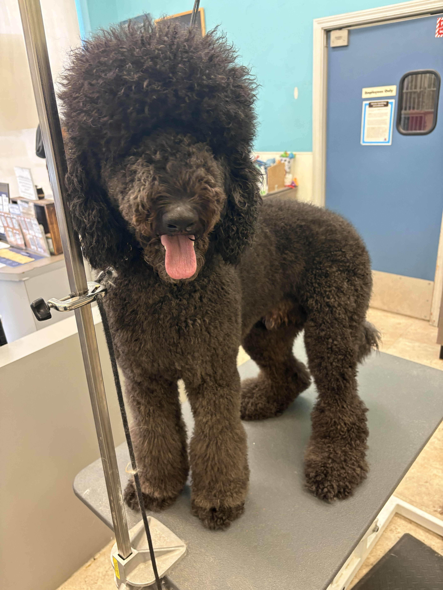
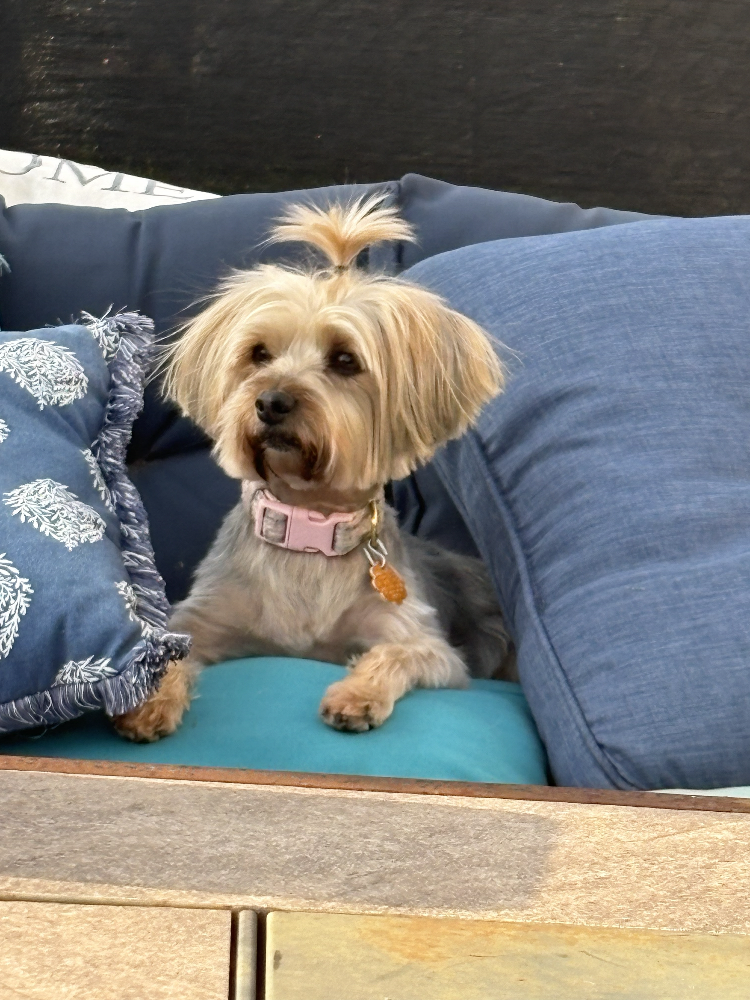
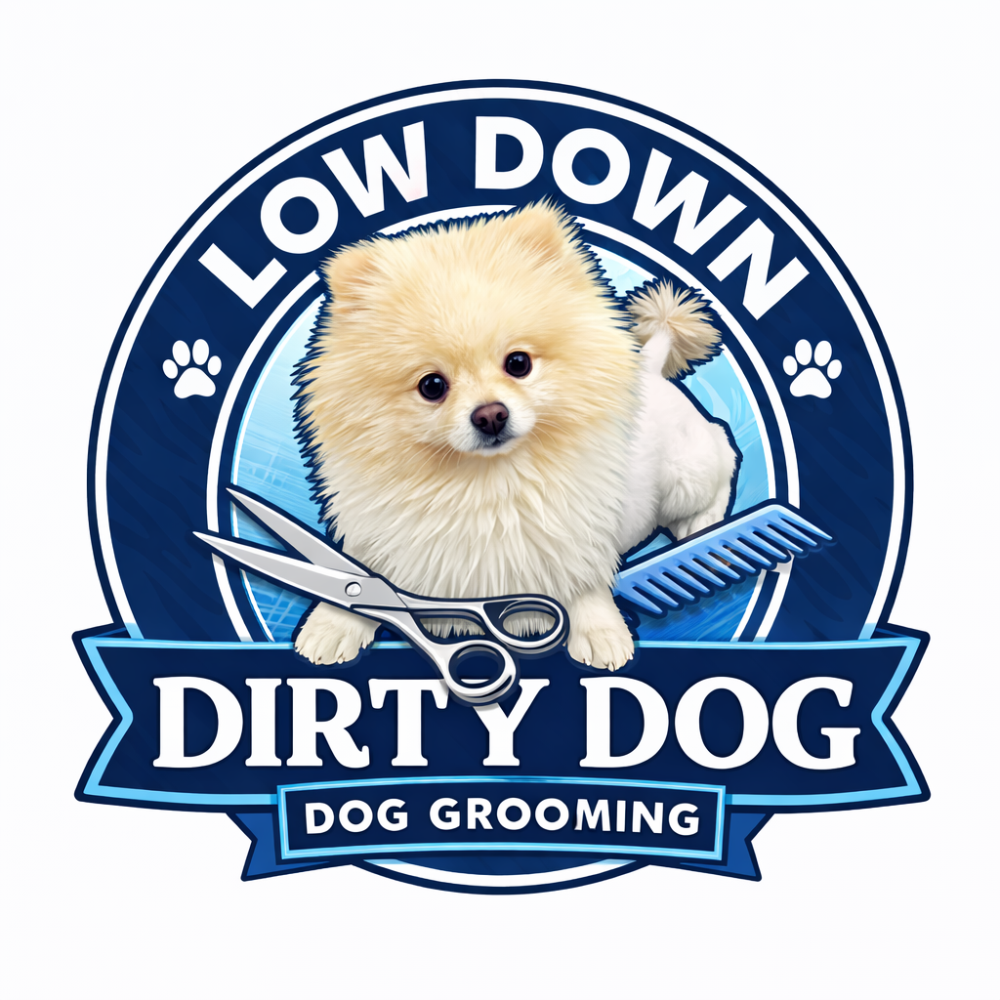

Real Dogs. Real Grooming. Real Results.
Take a look at some of the dogs I've groomed at Fluff & Go Chicago.




Professional Pet Styling
Professional dog grooming focused on comfort, cleanliness, safety, and beautiful results. Every dog receives personalized attention and care.
Take a look at some of the dogs I've groomed at Fluff & Go Chicago.


WHY FLUFF & GO
Every dog deserves more than just a haircut. At Fluff & Go Chicago, every appointment is focused on comfort, cleanliness, safety, and a finished look you can be proud of.
Professional grooming tailored to your dog's coat, breed, condition, size, and individual needs.
Every dog is different. Grooming is customized to create a clean, comfortable, and polished result.
Patience and care matter. Your dog receives individual attention throughout the grooming experience.
From routine maintenance to breed-specific styling, the goal is simple: a fresh, clean, beautiful finish.
THE STYLIST BEHIND THE STYLE
Professional grooming. Personal attention. A fresh look for every four-legged client.
Welcome to Fluff & Go Chicago! I'm Vernell, a certified professional pet stylist passionate about helping dogs look their best while making grooming a positive, comfortable experience.
I believe every dog deserves individual attention. That's why I consider each dog's coat, condition, breed, and grooming needs when working toward the right style and finish.
From routine coat maintenance to full haircuts and breed-inspired styling, my goal is to provide thoughtful care, quality results, and an experience pet parents can feel confident about.
Professional Pet Styling
Individualized Grooming
Care & Attention
OUR SERVICES
Fluff & Go Chicago provides professional dog grooming and pet styling tailored to your dog's coat, condition, breed, size, and individual needs. Every grooming appointment is focused on cleanliness, comfort, safety, and a beautiful finished result.
Professional bathing and thorough drying to leave your dog's coat clean, fresh, and properly prepared for grooming or everyday maintenance.
Complete grooming with haircut, trimming, and styling customized to your dog's coat, breed, condition, and preferred look.
Professional nail trimming to help maintain healthy, comfortable paws and proper nail length.
Gentle ear cleaning as part of your dog's grooming routine, helping keep the ears clean and comfortable.
Specialized coat care designed to remove loose undercoat, improve coat condition, and help reduce excessive shedding.
Gentle introductory grooming designed to help puppies become familiar and comfortable with the grooming process.
Not sure which service is right for your dog? We'll help determine the best grooming option based on your dog's coat, needs, and desired style.
Request an AppointmentUp to 25 lbs
26–60 lbs
61+ lbs
Final service pricing may vary depending on coat condition, size, breed, temperament, grooming requirements, and time required.
THE GROOMING PORTFOLIO
Every coat is different, and every groom is personalized. Explore some of the dogs I've had the pleasure of grooming at Fluff & Go Chicago.
Full Groom & Styling
Full Groom & Styling

Breed-Inspired Styling
Full Groom & Styling

Face & Coat Styling

Full Groom & Styling
Let's find the right grooming service for your four-legged family member.
Request an AppointmentBOOK YOUR DOG'S GROOMING
Tell us about your dog and the grooming service you're looking for. We'll review your request and contact you to confirm availability, pricing, and appointment details.
A $25 deposit is required for new customers. Your appointment is not confirmed until your request has been reviewed and confirmed.
Prefer to talk directly?
📱 Call or Text (224) 800-9820GOOD TO KNOW
Have questions before booking your dog's grooming appointment? Here are some helpful answers. If you need more information, we're happy to help.
Yes! Puppy grooming can be introduced gradually, depending on your puppy's age, coat, temperament, and individual needs. The goal is to help your puppy become more comfortable with the grooming process.
Pricing depends on your dog's size, breed, coat condition, temperament, desired haircut, and services requested. We'll review your dog's needs and confirm pricing before the appointment.
A $25 deposit is required for new customers only. Your appointment request must be reviewed and confirmed. Deposit payment instructions and any applicable cancellation terms will be provided during the booking process.
Please mention any matting when requesting your appointment. Severe matting can affect your dog's comfort and may require a shorter haircut. The coat will be assessed before grooming, and the safest appropriate option will be discussed with you.
Grooming time varies depending on your dog's size, coat, condition, temperament, and requested service. We'll provide an estimated timeframe when your appointment details are reviewed.
Fluff & Go Chicago serves clients in Chicago and surrounding communities. Contact us to confirm availability for your location and current appointment arrangements.
Fluff & Go Chicago is working toward a future mobile grooming operation. Mobile grooming availability is not currently guaranteed. Please contact us to discuss current appointment arrangements before booking.
Complete the appointment request form on our website with your contact information, your dog's details, your preferred date, and the service you're interested in. We'll review your request and contact you about availability and pricing.
Let's talk about your dog's grooming needs.
Call or Text (224) 800-9820 Or request an appointment onlineSERVICE AREA
Fluff & Go Chicago provides professional dog grooming and pet styling for clients in Chicago and surrounding communities. Every appointment is tailored to your dog's coat, style, and needs.
From routine baths and nail care to full grooming and breed-specific styling, Fluff & Go Chicago provides personalized pet grooming with a focus on safety, comfort, and quality results.
Contact us to confirm availability and whether your location is within our current service area.
LET'S CONNECT
Every dog deserves personalized care. Have a question about grooming, coat maintenance, or finding the right style? Let's talk about your dog's needs.
Contact us to confirm current appointment availability and whether your location is within our service area.
Appointment requests are reviewed before confirmation.